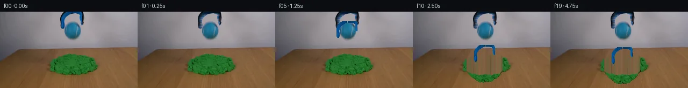

![首帧]()

Round 00
2026-11-05T00:24:51.356292+00:00像素候选变化代码 +332/−0inspection 更新
pixels 15c5824f7a4706ba · code 2fefc296b36a0cb0
查看本轮 generate.py 真实 diff
--- previous/generate.py +++ current/generate.py @@ -0,0 +1,332 @@ +#!/usr/bin/env python3 +"""generate.py — PixelWorld-Text case 0017 +Blue tennis ball dropped by grabber onto green kinetic sand. +20 frames @ 256×144, 4 fps, 5 seconds. +Frame 00 must exactly equal first_frame.png. +""" + +import numpy as np +from PIL import Image +from pathlib import Path +import sys + +# ── Paths ──────────────────────────────────────────────────────────── +CASE_DIR = Path(__file__).resolve().parent +FIRST_FRAME = np.array(Image.open(CASE_DIR / "first_frame.png")).astype(np.uint8) +H, W = 144, 256 +TMP = CASE_DIR / ".tmp" +TMP.mkdir(exist_ok=True) + +# ── Scene constants (from OBSERVATION.md) ────────────────────────── +SAND_TOP_Y = 79 # first row where green-dominant sand appears +BALL_CENTER_X = 133 # approximate ball centre x +BALL_CENTER_Y0 = 15 # ball centre y in frame 0 +BALL_RADIUS = 16 # approximate radius +GRAVITY = 24.0 # px/s² (scaled so ball drops ~48px in 2s) +FPS = 4 +DT = 1.0 / FPS # 0.25 s per frame + +# ── Helper: build ball mask from first frame ──────────────────────── +def build_ball_mask(img): + """Return boolean mask of ball pixels using color + region growing.""" + h, w = img.shape[:2] + # Seeds: very blue, very dark R + seeds = [] + for y in range(0, 22): + for x in range(110, 158): + r, g, b = int(img[y, x, 0]), int(img[y, x, 1]), int(img[y, x, 2]) + if r < 25 and b > 80 and b > g + 15: + seeds.append((y, x)) + + visited = np.zeros((h, w), dtype=bool) + ball_mask = np.zeros((h, w), dtype=bool) + from collections import deque + q = deque() + for y, x in seeds: + if not visited[y, x]: + visited[y, x] = True + ball_mask[y, x] = True + q.append((y, x)) + + while q: + cy, cx = q.popleft() + r0, g0, b0 = int(img[cy, cx, 0]), int(img[cy, cx, 1]), int(img[cy, cx, 2]) + for dy in (-1, 0, 1): + for dx in (-1, 0, 1): + if dy == 0 and dx == 0: + continue + ny, nx = cy + dy, cx + dx + if 0 <= ny < h and 0 <= nx < w and not visited[ny, nx]: + r, g, b = int(img[ny, nx, 0]), int(img[ny, nx, 1]), int(img[ny, nx, 2]) + color_dist = abs(r - r0) + abs(g - g0) + abs(b - b0) + if color_dist < 35 and r < 50 and b > g: + visited[ny, nx] = True + ball_mask[ny, nx] = True + q.append((ny, nx)) + return ball_mask + + +# ── Helper: inpaint ball hole with wall background ────────────────── +def inpaint_wall(background, ball_mask): + """Fill ball_mask region of background with wall colors sampled from + nearby non-ball pixels. Uses horizontal scanline interpolation.""" + result = background.copy() + h, w = background.shape[:2] + + for y in range(h): + row_mask = ball_mask[y] + if not row_mask.any(): + continue + # Find runs of masked pixels + in_run = False + run_start = 0 + for x in range(w): + if row_mask[x] and not in_run: + in_run = True + run_start = x + elif not row_mask[x] and in_run: … diff truncated; 245 more lines …